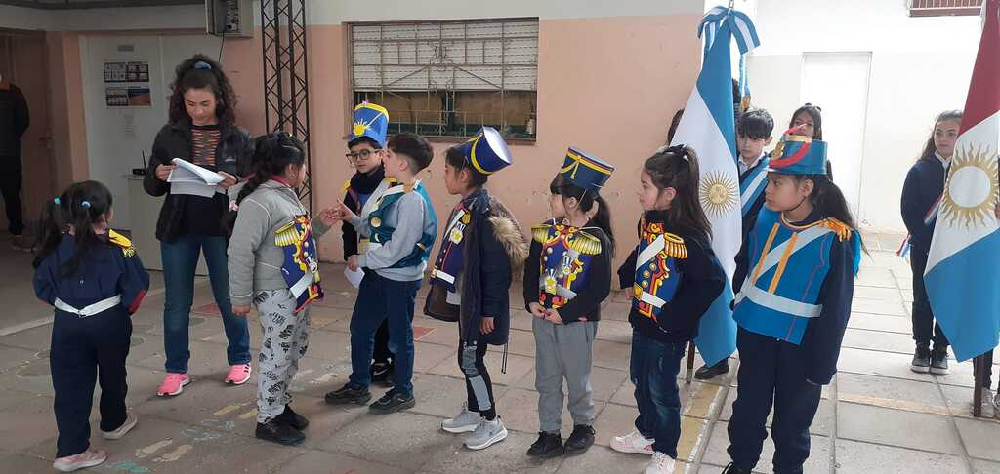
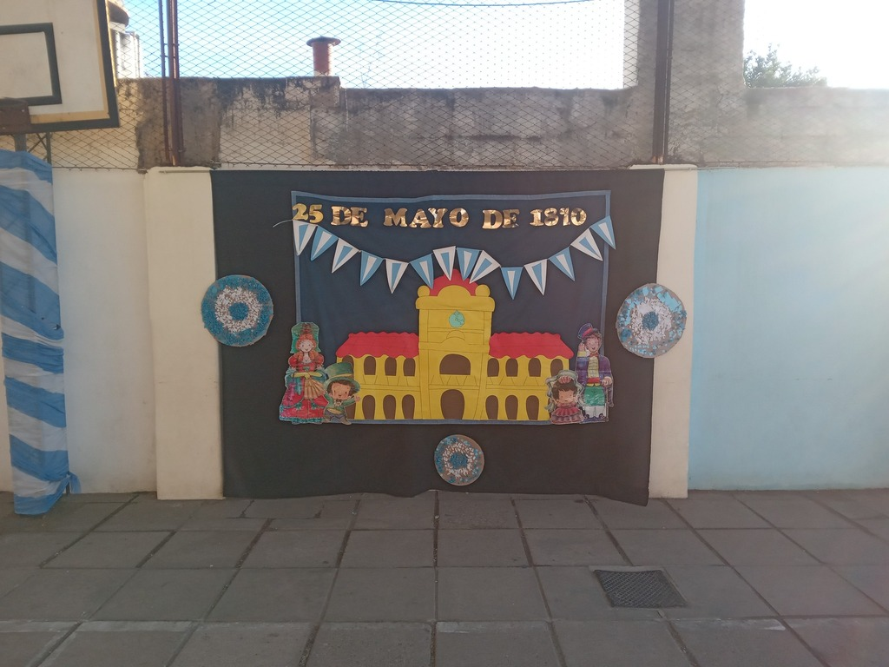
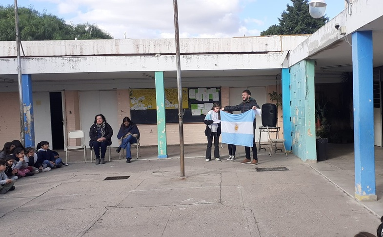
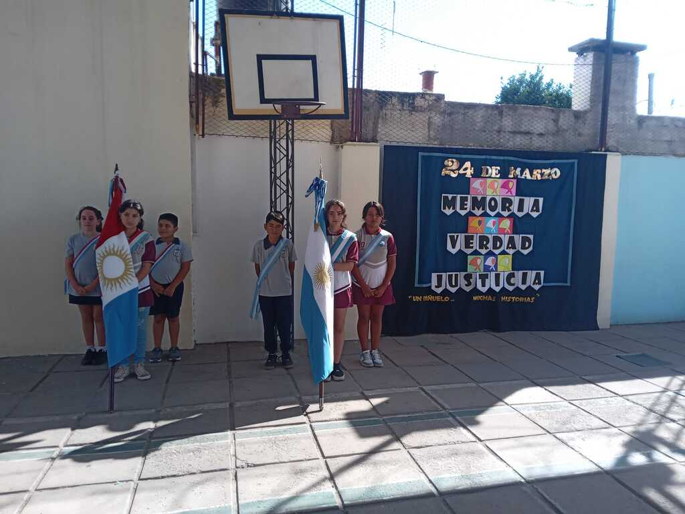

17 de agosto

Paso a la inmortalidad del General Don José de San Martín
Más fotos aqui
Link
2 de agosto
Feria de Ciencias
Más fotos aqui Link
20 de Junio
Promesa de Bandera y cumpleaños de la escuela
Más fotos aqui Link
17 de Junio
Día Nacional de la Libertad latinoamericana
Más fotos aqui Link
25 de Mayo de 1810

Revolución de mayo, día de la Patria
Más fotos aqui Link
12 de Mayo

Himno Nacional Argentino
Más fotos aqui Link
1 de Mayo
Dia del trabajador y Constitución Nacional
Más fotos aqui Link
2 de Abril
Dia del veterano y caídos en la guerra de Malvinas Argentinas
Más fotos aqui Link
24 de Marzo

Memoria, verdad y justicia
Más fotos aqui Link